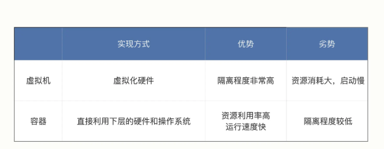
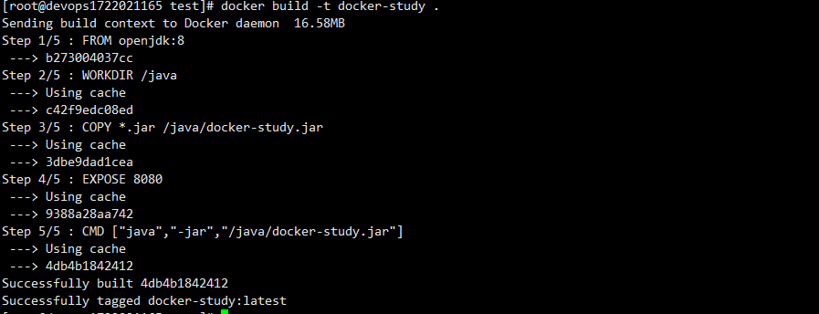
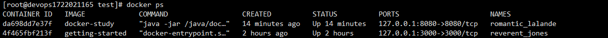
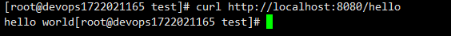

[TOC]
容器
容器- Container，容器其实是一种沙盒技术。沙盒就是能够像一个集装箱一样，把你的应用“装”起来的技术。这样，应用与应用之间，就因为有了边界而不至于相互干扰；而被装进集装箱的应用，也可以被方便地搬来搬去

namespace
命名空间。Namespace 是 Linux 内核的一项功能，该功能对内核资源(进程 ID、主机名、用户 ID、文件名、网络访问和进程间通信等相关资源)进行隔离，使得进程都可以在单独的命名空间中运行，并且只可以访问当前命名空间的资源。创建容器进程时，指定了这个进程所需要启用的一组 Namespace 参数。这样，容器就只能“看”到当前 Namespace 所限定的资源、文件、设备、状态，或者配置。而对于宿主机以及其他不相关的程序，它就完全看不到了。容器，其实是一种特殊的进程而已。相当于给进程盖了一间小板房，这样就实现了系统全局资源和进程局部资源的隔离。
cgroups
全称是 Linux Control Group， 用来实现对进程的 CPU、内存等资源的优先级和配额限制。限制一个进程组能够使用的资源上限，包括 CPU、内存、磁盘、网络带宽等等。相当于给进程的小板房加了一个天花板。
chroot
chroot 它可以更改进程的根目录，也就是限制访问文件系统，创建一份完全独立的文件系统，相当于给进程的小板房铺上了地砖。
创建一个容器
- 启用 Linux Namespace 配置。
- 设置指定的 Cgroups 参数。
- 切换进程的根目录（Change Root）。
与虚拟机对比

虚拟机的工作原理，名为 Hypervisor 的软件是虚拟机最主要的部分。它通过硬件虚拟化功能，模拟出了运行一个操作系统需要的各种硬件，比如 CPU、内存、I/O 设备等等。然后，它在这些虚拟的硬件上安装了一个新的操作系统，即 Guest OS。这样，用户的应用进程就可以运行在这个虚拟的机器中，它能看到的自然也只有 Guest OS 的文件和目录，以及这个机器里的虚拟设备。这就是为什么虚拟机也能起到将不同的应用进程相互隔离的作用。

镜像
其实我们在其他场合中也曾经见到过“镜像”这个词，比如最常见的光盘镜像，重装电脑时使用的硬盘镜像，还有虚拟机系统镜像。这些“镜像”都有一些相同点：只读，不允许修改，以标准格式存储了一系列的文件，然后在需要的时候再从中提取出数据运行起来。 容器技术里的镜像也是同样的道理。容器的镜像封装了应用程序以及它运行所需要的所有依赖。它还有一个更为专业的名字，叫作：rootfs（根文件系统）：挂载在容器根目录上、用来为容器进程提供隔离后执行环境的文件系统。rootfs 只是一个操作系统所包含的文件、配置和目录，并不包括操作系统内核。rootfs 只包括了操作系统的“躯壳”，并没有包括操作系统的“灵魂”。同一台机器上的所有容器，都共享宿主机操作系统的内核
由于 rootfs 里打包的不只是应用，而是整个操作系统的文件和目录，也就意味着，应用以及它运行所需要的所有依赖，都被封装在了一起。正是由于 rootfs 的存在，容器才有了一个被反复宣传至今的重要特性：一致性。打通了应用在本地开发和远端执行环境之间难以逾越的鸿沟。
镜像是容器静态的定义，容器是镜像运行时的实体

UnionFS
联合文件系统(Union File System)，最主要的功能是将多个不同位置的目录联合挂载（union mount）到同一个目录下。比如，我现在有两个目录 A 和 B，它们分别有两个文件：
$ tree
.
├── A
│ ├── a
│ └── x
└── B
├── b
└── x
然后，我使用联合挂载的方式，将这两个目录挂载到一个公共的目录 C 上：
$ mkdir C
$ mount -t aufs -o dirs=./A:./B none ./C
这时，我再查看目录 C 的内容，就能看到目录 A 和 B 下的文件被合并到了一起：
$ tree ./C
./C
├── a
├── b
└── x
文件联合系统是docker实现镜像的基本原理，太复杂了还没搞懂
Docker
Docker is an open platform for developing, shipping, and running applications. Docker enables you to separate your applications from your infrastructure so you can deliver software quickly. With Docker, you can manage your infrastructure in the same ways you manage your applications. By taking advantage of Docker’s methodologies for shipping, testing, and deploying code, you can significantly reduce the delay between writing code and running it in production. Docker 是一个用于开发、发布和运行应用程序的开放平台。Docker 使您能够将应用程序与基础架构分离，以便快速交付软件。借助 Docker，您可以像管理应用程序一样管理基础架构。通过利用 Docker 的方法来交付、测试和部署代码，可以显著减少编写代码和在生产环境中运行代码之间的延迟。
Docker provides the ability to package and run an application in a loosely isolated environment called a container. The isolation and security lets you run many containers simultaneously on a given host. Containers are lightweight and contain everything needed to run the application, so you don’t need to rely on what’s installed on the host. You can share containers while you work, and be sure that everyone you share with gets the same container that works in the same way. Docker 提供了在容器中打包和运行应用程序的功能。隔离和安全性允许您在给定主机上同时运行多个容器。容器是轻量级的，包含运行应用程序所需的一切，因此无需依赖主机上安装的内容。您可以在工作时共享容器，并确保与您共享的每个人都能获得以相同方式工作的相同容器。
Docker是一种开源平台，用于开发、交付和运行应用程序。它利用容器化技术，使得开发者能够将应用程序及其所有依赖项打包到一个称为容器的独立单元中。这个容器包含了应用程序的代码、运行时、系统工具、库以及设置，确保应用程序能够在不同的环境中以一致的方式运行。
Docker架构

- Docker client：客户端，用户使用的
- Docker daemon：守护进程，负责构建、运行和分发Docker 容器等，管理docker容器的
- Registry：镜像仓库
Docker 使用客户端-服务端架构 客户端与 Docker 守护程序通信，后者负责构建、运行和分发 Docker 容器的繁重工作。Docker 客户端和守护程序可以在同一系统上运行，也可以将 Docker 客户端连接到远程 Docker 守护程序。Docker 客户端和守护程序使用 REST API、UNIX 套接字或网络接口进行通信。
Docker命令
Docker 提供了许多命令，用于管理容器、镜像、网络等方面的各种操作。以下是一些常用的 Docker 命令：
-
容器生命周期管理：
docker run: 运行一个容器。docker start: 启动已停止的容器。docker stop: 停止一个运行中的容器。docker restart: 重启一个容器。docker pause: 暂停容器的所有进程。docker unpause: 恢复容器的所有进程。docker rm: 删除一个或多个容器。
-
容器信息查看：
docker ps: 列出运行中的容器。docker ps -a: 列出所有容器，包括停止的。docker inspect: 查看容器详细信息。
-
镜像管理：
docker images或docker image ls: 列出本地镜像。docker pull: 从远程仓库拉取镜像。docker rmi: 删除一个或多个本地镜像。
-
构建和提交镜像：
docker build: 根据 Dockerfile 构建镜像。docker commit: 提交容器为新的镜像。
-
容器日志和执行：
docker logs: 查看容器的日志。docker exec: 在运行中的容器中执行命令。
-
网络：
docker network ls: 列出 Docker 网络。docker network inspect: 查看网络详细信息。
-
其他常用命令：
-
docker version: 显示 Docker 版本信息。 -
docker info: 显示 Docker 系统信息。 -
docker-compose: 使用 Docker Compose 工具。
-
使用Docker运行一个应用
将一个应用运行在docker中，需要两步
- 构建docker镜像
- 使用docker运行
Docker中制作容器镜像使用的是Dockerfile
Dockerfile介绍
Docker can build images automatically by reading the instructions from a Dockerfile. A Dockerfile is a text document that contains all the commands a user could call on the command line to assemble an image.
Docker 可以通过读取“Dockerfile”中的指令自动构建镜像。 “Dockerfile”是一个文本文档，其中包含用户可以在命令行上调用来构建镜像的所有命令。Dockerfile 是用于构建 Docker 镜像的脚本文件,语法的简单介绍如下：
-
FROM： 指定基础镜像，即构建新镜像所基于的镜像。通常是操作系统或者包含运行时环境的基础镜像。DockerfileCopy code FROM openjdk:11 -
WORKDIR： 设置容器内的工作目录，即后续指令执行的基准目录。DockerfileCopy code WORKDIR /app -
COPY或ADD： 将本地文件或目录复制到容器中。COPY用于复制本地文件，而ADD不仅复制文件，还支持 URL 和解压缩。DockerfileCopy code COPY src/ /app/src -
RUN： 在容器内执行命令，通常用于安装软件包、更新系统、配置环境等。DockerfileCopy code RUN apt-get update && apt-get install -y some-package -
EXPOSE： 指定容器监听的网络端口。该指令并不会实际映射或打开端口，仅作为文档描述。DockerfileCopy code EXPOSE 8080 -
CMD或ENTRYPOINT： 定义容器启动时执行的命令。CMD用于指定默认的执行命令，ENTRYPOINT用于指定容器启动时运行的可执行文件。DockerfileCopy code CMD ["java", "-jar", "app.jar"] -
ENV： 设置环境变量，用于配置容器内部的环境。DockerfileCopy code ENV JAVA_HOME /usr/lib/jvm/java-11-openjdk -
VOLUME： 创建一个挂载点，用于让容器与主机或其他容器共享数据。DockerfileCopy code VOLUME /data -
USER： 设置运行时的用户名或 UID，并切换到该用户。DockerfileCopy code USER appuser -
ARG： 定义构建时传递给镜像的参数。DockerfileCopy code ARG VERSION=latest
步骤
-
建一个springboot项目，随便写一个接口
package com.zt.study.docker.study.controller; import org.springframework.web.bind.annotation.RequestMapping; import org.springframework.web.bind.annotation.RestController; /** * @author zhengtao on 2023/12/2 */ @RestController public class TestController { @RequestMapping("/hello") public String helloWorld() { return "hello world"; } } -
编写Dockerfile文件
#使用 OpenJDK 8 作为基础镜像 FROM openjdk:8 # 设置工作目录 WORKDIR /java # 复制文件 COPY *.jar /java/docker-study.jar # 暴露端口 EXPOSE 8080 # 启动命令 CMD ["java","-jar","/java/docker-study.jar"]
将jar文件和Dockerfile文件放在linux上同一层级
- 使用docker build命令打包镜像
# -t 为命名，.代表在此层目录找Dockerfile
docker build -t docker-study .

-
使用docker run命名运行容器
# -d 代表在后台运行，-p代表暴露端口，即将容器的端口 8080 发布到本机上的8080 docker run -dp 127.0.0.1:8080:8080 docker-study -
使用docker ps看是否启动成功

也可以使用curl http://localhost:8080/hello验证

-
可以将这个镜像推到docker hub中https://hub.docker.com/
先在自己的仓库中新建一个docker-study仓库
# 登录到你自己的docker hub账号，比如我的wzgl998877 docker login -u YOUR-USER-NAME # 把镜像命名修改为你自己的镜像名称 docker tag getting-started YOUR-USER-NAME/getting-started # 推送到docker hub docker push YOUR-USER-NAME/getting-started